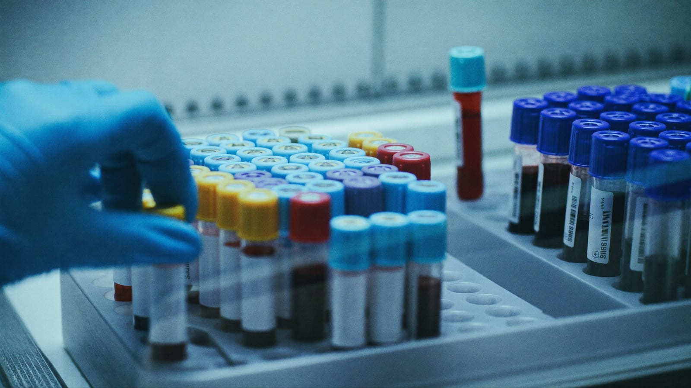

Blutwerte & Hormone verstehen
Sachlich, ohne Hype: welche Werte für Männer zählen — und warum die natürlichen Hebel fast immer zuerst kommen.

Inhalt
- Dein Blut als Dashboard, nicht als Laborliste
- Bereich 1 — Sauerstoff & Blut
- Bereich 2 — Herz-Kreislauf
- Bereich 3 — Zucker & Energie
- Bereich 4 — Leber
- Bereich 5 — Niere
- Bereich 6 — Entzündung & Mängel
- Bereich 7 — Hormone
- Bereich 8 — Männer-Vorsorge (PSA)
- Was die Biohacking-Szene zusätzlich verfolgt
- Referenzbereich vs. Optimalbereich
- Wenn du nur EIN Panel machst
- Testosteron & die natürlichen Hebel
- Hormone & Peptide: ehrliche Aufklärung
- Dein Arztgespräch vorbereiten
- Wann unbedingt zum Arzt?
1. Dein Blut als Dashboard, nicht als Laborliste
Der typische Laborzettel ist ein Gegner der Verständlichkeit: dreißig Abkürzungen, drei Spalten mit Zahlen, ein paar Pfeile nach oben oder unten. Man liest ihn wie eine Steuererklärung — kurz, irritiert, und dann weg. Genau das ist das Problem. So verpasst man das, was Blutwerte eigentlich können: früh und leise anzeigen, in welchem System deines Körpers etwas kippt, lange bevor du es spürst.
Deshalb der Perspektivwechsel in diesem Ebook: Betrachte dein Blut nicht als Liste, sondern als Dashboard mit acht Bereichen. Jeder Bereich beantwortet eine konkrete Frage über deinen Körper. Ein Auto-Cockpit zeigt dir auch nicht dreißig Rohsignale, sondern Tank, Temperatur, Drehzahl, Öldruck — verdichtete Bereiche, die du sofort deuten kannst. Genau so wollen wir die Werte ordnen.
| # | Bereich | Die Frage dahinter |
|---|---|---|
| 1 | Sauerstoff & Blut | Kommt genug Sauerstoff in deine Zellen? |
| 2 | Herz-Kreislauf | Verstopfen deine Gefäße — still, über Jahre? |
| 3 | Zucker & Energie | Wie gut steuert dein Körper den Blutzucker? |
| 4 | Leber | Ist deine Stoffwechsel-Zentrale überlastet? |
| 5 | Niere | Filtert dein Körper zuverlässig? |
| 6 | Entzündung & Mängel | Schwelt etwas — und fehlt dir etwas? |
| 7 | Hormone | Steuert dein System sauber — inklusive Schilddrüse? |
| 8 | Männer-Vorsorge | Bist du bei der Prostata auf dem Schirm? |
Der eigentliche Wert liegt selten in einem einzelnen Wert, sondern im Verlauf und im Gesamtbild — und darin, vorbereitet ins Arztgespräch zu gehen. Ein Wert ist eine Momentaufnahme; drei Werte über zwei Jahre sind eine Richtung. Die Richtung entscheidet.
Die druckbare Marker-Liste mit Verlaufsbogen findest du in der MaleMetrix Blutwerte-Checkliste — die nimmst du direkt mit zum Arzt. Welche Werte für dich sinnvoll sind, entscheidet dein Arzt, abhängig von Alter, Beschwerden und Vorgeschichte.
2. Bereich 1 — Sauerstoff & Blut Level 1 · Pflicht
Die Frage: Kommt genug Sauerstoff in deine Zellen — und stimmt die Qualität des Transportsystems?
Jede Zelle, jede Muskelfaser, jede Gehirnregion lebt von Sauerstoff. Transportiert wird er von Hämoglobin (Hb), dem eisenhaltigen Farbstoff in den roten Blutkörperchen. Ist der Hb-Wert zu niedrig (Anämie), kommt trotz normaler Atmung zu wenig Sauerstoff im Gewebe an — die Folge sind Müdigkeit, Kurzatmigkeit bei Belastung, Konzentrationsschwäche und blasse Leistung im Training. Diese Symptome werden bei Männern oft dem Stress oder „dem Alter" zugeschrieben, dabei stehen sie messbar im kleinen Blutbild.
Der Hämatokrit (Hkt) beschreibt, welcher Anteil des Blutes aus festen Zellen besteht. Zu niedrig deutet Richtung Anämie; zu hoch macht das Blut zähflüssiger und relevanter fürs Herz-Kreislauf-System. Genau deshalb ist der Hämatokrit ein Schlüsselwert unter einer Testosteron-Ersatztherapie (TRT), die ihn nach oben treiben kann — das ist ärztlich zu überwachen.
Die spannende Detektivarbeit machen die Erythrozyten-Indizes MCV und MCH: Sie beschreiben Größe und Hämoglobingehalt der roten Blutkörperchen und ordnen die Art einer Anämie ein. Kleine, blasse Zellen (niedriges MCV/MCH) deuten typischerweise auf Eisenmangel — der Bogen zu Ferritin in Bereich 6. Große Zellen (hohes MCV) lenken den Verdacht eher auf einen Mangel an Vitamin B12 oder Folsäure. Ein einzelner Hb-Wert sagt „zu wenig Sauerstoff"; MCV und MCH sagen „und zwar wahrscheinlich deshalb".
| Wert | Worum es geht |
|---|---|
| Hämoglobin (Hb) | Sauerstoff-Transporteur — niedrig z. B. bei Anämie |
| Hämatokrit (Hkt) | Anteil fester Blutzellen — wichtig u. a. unter TRT |
| Erythrozyten | Anzahl der roten Blutkörperchen |
| MCV / MCH | Größe & Beladung der roten Zellen — ordnen die Art einer Anämie ein |
| Leukozyten | weiße Blutkörperchen — Infekte & Entzündung |
| Thrombozyten | Blutplättchen — Blutgerinnung |
3. Bereich 2 — Herz-Kreislauf Level 1 · Pflicht
Die Frage: Verstopfen deine Gefäße — still, über Jahrzehnte, ohne ein einziges Symptom?
Herz-Kreislauf-Erkrankungen sind bei Männern die Todesursache Nummer eins, und ihr Verlauf ist tückisch leise: Die Arterien verengen sich über Jahrzehnte, ohne dass man etwas merkt — bis zum akuten Ereignis. Genau deshalb ist dieser Bereich der wichtigste Grund, überhaupt regelmäßig Blut zu messen. Hier siehst du die Gefahr, während du sie noch beeinflussen kannst.
ApoB: warum es präziser ist als LDL
Jeder kennt „das schlechte Cholesterin", das LDL. Der entscheidende Punkt, den die Szene seit Jahren betont, lautet: Nicht die Cholesterinmenge schädigt die Gefäße, sondern die Anzahl der Partikel, die sich in die Gefäßwand einlagern können. Jedes dieser atherogenen Partikel — LDL, VLDL, Lp(a) und weitere — trägt exakt ein Molekül namens ApoB an seiner Oberfläche. Misst man ApoB, zählt man also direkt die Zahl der potenziell gefäßschädigenden „Geschosse".
Warum das besser ist: Zwei Männer können denselben LDL-Wert haben — der eine trägt ihn in wenigen großen Partikeln, der andere in vielen kleinen. Der zweite hat mehr Partikel, mehr Kontaktflächen zur Gefäßwand und ein höheres Risiko, obwohl der LDL-Wert identisch aussieht. ApoB löst diese Verwechslung auf: Es misst die Munition, nicht nur die Gesamtmasse. Deshalb gilt ApoB in der Präventionsmedizin zunehmend als der aussagekräftigere Marker.
Lp(a): einmal im Leben messen
Lipoprotein(a), kurz Lp(a), ist ein besonderes, weitgehend genetisch festgelegtes Partikel. Der Spiegel ist zu einem großen Teil angeboren und ändert sich über Ernährung, Sport oder Gewicht kaum — was zunächst frustrierend klingt, aber eine klare Konsequenz hat: Es reicht, Lp(a) einmal im Leben zu bestimmen. Ein hoher Wert ist ein eigenständiger, vom übrigen Lipidprofil unabhängiger Risikofaktor und verändert, wie konsequent man alle anderen Hebel bedient. Viele Männer mit früher Herzgeschichte in der Familie tragen ein erhöhtes Lp(a), ohne es je gemessen zu haben.
Triglyceride & Blutdruck
Triglyceride sind Blutfette, die stark auf Lebensstil reagieren — auf Zucker, Alkohol und Überschuss. Hohe Triglyceride bei niedrigem HDL sind ein klassisches Muster für eine beginnende Insulinresistenz und schlagen so eine Brücke zu Bereich 3. Und der Blutdruck ist zwar kein Laborwert, gehört aber untrennbar in dieses Bild: Er ist der mechanische Druck, unter dem all diese Partikel auf die Gefäßwand treffen. Ein zu Hause gemessener, ehrlicher Blutdruck-Verlauf ist einer der billigsten und stärksten Gesundheitsindikatoren überhaupt.
| Marker | Was er zeigt |
|---|---|
| ApoB | Anzahl der gefäßschädigenden Partikel — präziser als LDL allein |
| Lp(a) | genetischer, eigenständiger Risikofaktor — einmal im Leben messen |
| LDL / HDL | klassisches Lipidprofil — guter Startpunkt, nicht das ganze Bild |
| Triglyceride | lebensstil-sensible Blutfette — Brücke zum Zuckerstoffwechsel |
| Blutdruck | der Druck aufs System — zu Hause im Verlauf messen |
4. Bereich 3 — Zucker & Energie Level 1 · Pflicht
Die Frage: Wie gut steuert dein Körper den Blutzucker — und tut er es noch, ohne heimlich immer mehr Insulin dafür aufzuwenden?
Die Physiologie dahinter ist der Schlüssel: Steigt der Blutzucker, schüttet die Bauchspeicheldrüse Insulin aus, das den Zucker in die Zellen schleust. Werden die Zellen mit der Zeit „taub" für dieses Signal — Insulinresistenz —, muss der Körper immer mehr Insulin produzieren, um denselben Blutzucker zu halten. Das Tückische: Der Nüchternzucker kann jahrelang normal bleiben, während der Insulinbedarf im Hintergrund still ansteigt. Man ist längst auf dem Weg, sieht aber im Standard-Panel noch nichts.
Deshalb braucht dieser Bereich drei Blickwinkel, die aufeinander aufbauen:
| Marker | Zeitfenster | Was er verrät |
|---|---|---|
| Nüchternglukose | dieser Moment | Momentaufnahme des Blutzuckers — spät auffällig |
| HbA1c | ~2–3 Monate | „Langzeitzucker" — durchschnittliche Beladung der roten Zellen |
| HOMA-IR / Insulin | der Aufwand | wie viel Insulin nötig ist — zeigt Resistenz am frühesten |
Die Nüchternglukose ist die klassische Momentaufnahme. Der HbA1c misst, wie stark der Blutzucker die roten Blutkörperchen über die letzten zwei bis drei Monate „verzuckert" hat — ein Mittelwert, der einzelne Ausreißer glättet. Beide werden aber oft erst auffällig, wenn die Regulation schon länger schwächelt.
Der frühe Blick ist HOMA-IR, berechnet aus Nüchternglukose und Nüchtern-Insulin. Er schätzt, wie viel Insulin dein Körper aufwenden muss, um den Zucker im Griff zu halten. Steigt der Aufwand, während der Zucker noch normal aussieht, ist das das früheste laborchemische Warnsignal für eine kippende Stoffwechsellage — Jahre bevor ein Arzt „Prädiabetes" sagen würde. Genau deshalb hat die Biohacking-Szene HOMA-IR aus der Forschung in den Alltag geholt.
5. Bereich 4 — Leber Level 2 · sinnvoll
Die Frage: Ist deine zentrale Stoffwechsel-Fabrik überlastet?
Die Leber ist das am stärksten unterschätzte Organ des Mannes: Sie verstoffwechselt Alkohol und Medikamente, baut Fette und Zucker um, produziert Eiweiße und entgiftet. Sie beschwert sich nur nicht — Leberprobleme tun lange nicht weh. Was sie verrät, sind drei Enzyme, die ins Blut übertreten, wenn Leberzellen belastet werden oder zugrunde gehen:
| Wert | Worum es geht |
|---|---|
| ALT (GPT) | das leberspezifischste Enzym — steigt u. a. bei Fettleber |
| AST (GOT) | steckt auch in Muskel & Herz — im Verhältnis zu ALT lesen |
| GGT | reagiert empfindlich auf Alkohol und Medikamente |
Der häufigste Grund für leicht erhöhte Leberwerte bei sonst gesunden Männern ist heute nicht mehr der Alkohol allein, sondern die nicht-alkoholische Fettleber — direkt gekoppelt an Bauchfett und Insulinresistenz aus Bereich 3. Das ist die gute Nachricht: Diese Form ist über Gewichtsabnahme und weniger Zucker in frühen Stadien oft rückläufig. Ein erhöhtes GGT ist zudem der ehrlichste Alkohol-Spiegel im Labor — es reagiert sensibel auf regelmäßigen Konsum, den man sich selbst gern kleinredet.
6. Bereich 5 — Niere Level 2 · sinnvoll
Die Frage: Filtert dein Körper zuverlässig, was er ausscheiden muss?
Die Nieren sind die Kläranlage: Sie filtern Abbauprodukte aus dem Blut. Wie gut sie das tun, schätzt man klassisch über Kreatinin und die daraus berechnete eGFR (geschätzte Filtrationsrate). Hier steckt für trainierte Männer aber eine bekannte Falle.
| Wert | Worum es geht |
|---|---|
| Kreatinin | Standard-Nierenwert — bei viel Muskel verzerrt |
| eGFR | geschätzte Filtrationsleistung — aus Kreatinin (oder Cystatin C) berechnet |
| Cystatin C | muskel-unabhängig — aussagekräftiger bei trainierten Männern |
Für den durchschnittlichen Mann reicht Kreatinin plus eGFR als solider Basis-Check. Wer viel Muskelmasse trägt, viel Protein isst oder Kreatin supplementiert (was den Kreatininwert leicht anheben kann, ohne die Niere zu belasten), profitiert davon, das Thema über Cystatin C sauber einzuordnen — im Zweifel mit dem Arzt.
7. Bereich 6 — Entzündung & Mängel Level 1 · Pflicht
Die Frage: Schwelt in dir eine stille Entzündung — und fehlen dir Bausteine, die dich leise ausbremsen?
hs-CRP: das Rauchmelder-Signal
hs-CRP (hochsensitives C-reaktives Protein) misst eine niedrigschwellige, chronische Entzündungsaktivität — jenes stille Schwelen, das mit Herz-Kreislauf-Risiko, Insulinresistenz und schlechter Regeneration verknüpft ist. Wichtig: hs-CRP ist unspezifisch. Ein akuter Infekt, eine Erkältung oder eine harte Trainingswoche treiben es kurzfristig hoch — deshalb misst man es nicht im Krankheitsschub, sondern in Ruhe, und wertet den Trend, nicht den einzelnen Ausschlag. Ein dauerhaft leicht erhöhtes hs-CRP ohne Infekt ist ein ehrlicher Hinweis, beim Lebensstil genauer hinzusehen: Bauchfett, Schlafmangel und Alkohol sind typische Treiber.
Die häufigen Mängel
| Marker | Warum er zählt |
|---|---|
| Ferritin | Eisenspeicher — niedrig raubt Energie, sehr hoch ist selbst ein Entzündungssignal |
| Vitamin D | bei vielen Männern niedrig, v. a. im Winter — relevant für Hormone, Knochen, Immunsystem |
| Vitamin B12 | wichtig für Nerven & Blutbildung — Mangel v. a. bei wenig tierischer Kost |
Ferritin ist der Eisenspeicher-Wert und ein doppelter Marker: Zu niedrig bedeutet leere Speicher — eine der häufigsten, am meisten übersehenen Ursachen von Dauermüdigkeit, oft noch bevor eine Anämie im Blutbild auftaucht (Bogen zurück zu Bereich 1). Zu hoch kann selbst ein Entzündungszeichen sein, weil Ferritin im Rahmen von Entzündungen ansteigt — was die Verbindung zu hs-CRP erklärt. Vitamin D ist bei vielen Männern in unseren Breiten niedrig, besonders im Winter, und wirkt weit über die Knochen hinaus. Vitamin B12 gehört dazu, sobald wenig tierische Lebensmittel gegessen werden — der Mangel schleicht sich über Jahre ein und zeigt sich früh im hohen MCV.
8. Bereich 7 — Hormone Level 2 · sinnvoll
Die Frage: Steuert dein hormonelles System sauber — und ist die Schilddrüse, der stille Dirigent, in Takt?
Schilddrüse zuerst
Der häufigste Fehler beim Thema „Männerhormone" ist, sofort auf Testosteron zu starren und die Schilddrüse zu übersehen. Dabei ist sie der übergeordnete Taktgeber des Stoffwechsels. Eine Unter- oder Überfunktion verursacht exakt die Symptome, die man reflexhaft dem Testosteron zuschreibt: Müdigkeit, Antriebslosigkeit, Gewichtsveränderung, gedrückte Stimmung, nachlassende Libido. Der Einstieg ist TSH; bei Auffälligkeit ergänzt um die freien Werte fT3 und fT4. Das Gute: Schilddrüsenstörungen sind gut diagnostizierbar und behandelbar. Deshalb schaut man hier zuerst, bevor man über das Sexualhormon spekuliert.
Testosteron: gesamt, frei und der SHBG-Trick
Beim Testosteron reicht der Gesamtwert allein oft nicht. Ein großer Teil des Testosterons ist im Blut an das Transporteiweiß SHBG gebunden und damit biologisch nicht direkt verfügbar. Nur das freie Testosteron wirkt an den Zellen. Ist das SHBG hoch, kann der Gesamtwert normal aussehen, während frei zu wenig ankommt — und die Symptome trotz „unauffälligem" Laborzettel bestehen. Deshalb liest man Gesamt-Testosteron, SHBG und freies (oder berechnetes freies) Testosteron immer zusammen.
| Marker | Worum es geht |
|---|---|
| TSH (+ fT3/fT4) | Schilddrüse — der Taktgeber, zuerst prüfen |
| Testosteron gesamt | Gesamtmenge — nur mit SHBG interpretierbar |
| SHBG | Transporteiweiß — bindet Testosteron, verändert die Verfügbarkeit |
| Freies Testosteron | der biologisch aktive Anteil — das, was wirklich wirkt |
| Estradiol (E2) | auch beim Mann wichtig — für Knochen, Libido, Stimmung |
| Prolaktin | bei niedrigem Antrieb/Libido relevant — kann Testosteron drücken |
Estradiol ist kein „Frauenhormon", sondern auch beim Mann für Libido, Knochen und Stimmung nötig — es geht um die Balance zum Testosteron, nicht um „niedrig gut". Prolaktin gehört ins Bild, wenn Libido und Antrieb ohne Erklärung einbrechen. Und der wichtigste Satz zum ganzen Bereich: Ein einzelner Testosteronwert ist wertlos. Werte schwanken über den Tag und von Tag zu Tag stark. Seriöse Einordnung braucht wiederholte, morgens gemessene Werte plus klare Symptome — und gehört zum Arzt (Details in Abschnitt 13).
9. Bereich 8 — Männer-Vorsorge (PSA) Level 4 · ärztlich
Die Frage: Bist du bei der Prostata rechtzeitig auf dem Schirm?
Das PSA (prostataspezifisches Antigen) ist der zentrale Vorsorgemarker für die Prostata. Seine Bedeutung steigt mit dem Alter. Wichtig für ein ehrliches Bild: PSA ist kein simpler „Krebs ja/nein"-Schalter. Der Wert kann aus harmlosen Gründen erhöht sein — durch eine gutartige Vergrößerung, eine Entzündung, nach dem Radfahren oder nach Geschlechtsverkehr. Deshalb hilft das Verhältnis von freiem zu Gesamt-PSA und vor allem der Verlauf über die Zeit bei der Einordnung eines auffälligen Werts weit mehr als eine einzelne Zahl.
Ob, ab welchem Alter und in welchem Abstand PSA gemessen wird, ist eine echte ärztliche Abwägungsentscheidung — abhängig von Alter, familiärer Vorgeschichte und individuellem Risiko. Genau deshalb steht dieser Bereich als ärztliche Angelegenheit gekennzeichnet: Er ist der Bereich, den du nicht selbst „optimierst", sondern mit dem Arzt besprichst.
10. Was die Biohacking-Szene zusätzlich verfolgt Level 3 · Biohacking
Ein Standard-Panel beim Hausarzt deckt oft nur die Basics ab: kleines Blutbild, Leber, Niere, Glukose, klassisches Lipidprofil. Die datenorientierte Longevity- und Biohacking-Szene verfolgt darüber hinaus gezielt eine Handvoll Marker, weil sie Risiken früher und präziser zeigen. Der ehrliche Rahmen zuerst — und dann die Liste.
| Marker | Warum die Szene ihn extra misst |
|---|---|
| ApoB | zählt die Partikel direkt — präziser als LDL beim Herzrisiko |
| Lp(a) | genetisches Restrisiko, das Standard-Panels ignorieren — einmalig |
| hs-CRP | stille Entzündung, die Standard-CRP oft nicht auflöst |
| HOMA-IR / Insulin | zeigt Insulinresistenz Jahre vor dem HbA1c |
| Omega-3-Index | misst EPA/DHA in den roten Blutzellen — Status statt Rätselraten |
Der Omega-3-Index ist ein gutes Beispiel für die Denke: Statt zu raten, ob die Ernährung genug EPA und DHA liefert, misst er den tatsächlichen Gehalt in der Membran der roten Blutkörperchen — ein Status, kein Bauchgefühl. Die anderen vier — ApoB, Lp(a), hs-CRP, HOMA-IR — hast du in den Bereichen oben bereits kennengelernt; sie sind der rote Faden, der das Dashboard von einem Standard-Check unterscheidet.
11. Referenzbereich vs. Optimalbereich
Der wichtigste Denkfehler auf jedem Laborzettel steckt im Wörtchen „Normbereich". Ein Referenzbereich ist rein statistisch definiert: Er umfasst meist die mittleren 95 % der Messwerte einer Vergleichsbevölkerung. Er sagt „so liegen die meisten" — nicht „so ist es gesund". Und die Vergleichsbevölkerung ist eben eine Durchschnittsbevölkerung, nicht eine Gruppe besonders gesunder, aktiver Männer.
Daraus folgt der Unterschied, den die Szene betont: Ein Wert kann „im Referenzbereich" und trotzdem nicht ideal sein — gerade an den Rändern. Ein Ferritin am unteren Rand, ein HbA1c am oberen Ende des Normalen, ein Vitamin D knapp über der Untergrenze: alles formal „grün", und doch Raum nach oben. Der Optimalbereich-Gedanke fragt deshalb nicht „bin ich noch normal?", sondern „wo innerhalb des Machbaren stehe ich?".
Praktisch heißt das: Nutze den Optimalbereich-Gedanken als Kompass für Richtung und Priorität, nicht als Selbstdiagnose-Werkzeug. Und miss im Verlauf — dein eigener Trend über die Jahre ist der ehrlichste Maßstab, den es gibt.
12. Wenn du nur EIN Panel machst
Nicht jeder startet mit dem vollen Dashboard — und das muss er auch nicht. Wenn du nur ein einziges, bezahlbares Panel machst, sollte es die Bereiche abdecken, die am häufigsten still kippen und am meisten Konsequenz haben. Diese Basis deckt sechs der acht Bereiche ab und ist ein starker Startpunkt für das Gespräch mit deinem Arzt:
| Dein Einsteiger-Panel | Deckt Bereich |
|---|---|
| Kleines Blutbild (inkl. Hb, Hkt, MCV/MCH) | 1 — Sauerstoff & Blut |
| Lipidprofil + ApoB (und einmalig Lp(a)) | 2 — Herz-Kreislauf |
| Nüchternglukose + HbA1c | 3 — Zucker & Energie |
| ALT, AST, GGT | 4 — Leber |
| Kreatinin + eGFR | 5 — Niere |
| hs-CRP, Ferritin, Vitamin D | 6 — Entzündung & Mängel |
Hormone (Bereich 7) und PSA (Bereich 8) kommen gezielt dazu, wenn Symptome, Alter oder Risiko es nahelegen — nicht als reflexhafter Standard. So bleibst du beim Prinzip: erst die breite, günstige Basis, die viel erklärt; dann gezielt vertiefen, wo es eine Entscheidung ändert.
13. Testosteron & die natürlichen Hebel Level 1 · Pflicht
Testosteron sinkt bei Männern ab etwa 30–40 langsam, grob rund 1 % pro Jahr. Das ist normal. Und viele Symptome, die man vorschnell „niedrigem Testosteron" zuschreibt — Müdigkeit, weniger Antrieb, Bauchfett, schlechter Schlaf —, sind unspezifisch und hängen oft stärker am Lebensstil als an einem einzelnen Hormonwert. Bevor man über irgendetwas anderes nachdenkt, ziehen deshalb diese fünf Hebel — kostenlos, sicher und in deiner Hand:
- Schlaf: Zu wenig Schlaf senkt Testosteron messbar — schon eine Woche verkürzter Nächte reicht. Der größte und am meisten unterschätzte Hebel. Tiefer im Schlaf-&-Energie-Ebook.
- Krafttraining: Training mit Gewichten unterstützt Hormonhaushalt, Insulinsensitivität und Körperkomposition zugleich — Muskel ist ein metabolisches Organ, kein Deko.
- Körperfett senken: Viszerales Bauchfett ist hormonell aktiv und verschiebt die Balance ungünstig. Weniger davon wirkt oft direkt auf mehrere Dashboard-Bereiche gleichzeitig.
- Vitamin-D-Status: Ein Mangel ist häufig und lässt sich — nach Blutwert und ärztlich begleitet — gezielt beheben.
- Alkohol & Stress: Beide drücken auf Schlaf, Entzündung (hs-CRP) und Hormone. Weniger ist hier mehr.
14. Hormone & Peptide: ehrliche Aufklärung Level 4 · ärztlich
Kaum ein Thema ist online so aufgeladen und so voll gefährlichem Halbwissen. Deshalb hier klar und neutral:
TRT (Testosteron-Ersatztherapie) ist ein medizinisches Verfahren. In Deutschland ist Testosteron verschreibungspflichtig. Eine seriöse Indikation braucht wiederholte Messungen, klare Symptome und ärztliche Abklärung — und sie hat reale Nebenwirkungen und Konsequenzen, unter anderem für die Fruchtbarkeit und für Werte wie den Hämatokrit (siehe Bereich 1). Das gehört zu einem Arzt (Androloge, Endokrinologe, Urologe), nicht in ein Forum.
Peptide (etwa Wachstumshormon-Sekretagoga und andere) werden stark gehyped. Die Realität ist nüchterner: Für viele ist die Studienlage dünn oder uneindeutig, viele sind nicht als Arzneimittel zugelassen, der rechtliche Status ist heikel und Schwarzmarkt-Ware ist häufig verunreinigt oder falsch deklariert. Das Risiko trägt allein der Anwender.
15. Dein Arztgespräch vorbereiten
Das Dashboard entfaltet seinen Wert erst im Gespräch mit dem Arzt — und du holst am meisten heraus, wenn du vorbereitet kommst, mit Daten statt Forenwissen:
- Bring deine aktuellen und früheren Werte mit. Der Verlauf zählt mehr als jeder Einzelwert.
- Notiere konkrete Symptome — seit wann, wie stark, in welchem Zusammenhang.
- Schreib deine Fragen vorher auf. Im Gespräch vergisst man die Hälfte.
- Sei ehrlich zu Schlaf, Alkohol, Stress und Bewegung. Das ändert die Interpretation der Werte.
- Frag gezielt nach dem, was fehlt: „Können wir ApoB statt nur LDL ansehen?", „Lohnt bei mir Cystatin C?", „Ist Lp(a) je gemessen worden?"
Wer seine natürlichen Hebel zuerst sauber bedient und mit klaren Daten zum Arzt geht, bekommt die mit Abstand bessere Beratung. Die MaleMetrix Blutwerte-Checkliste bündelt die Marker und einen Verlaufsbogen zum Mitnehmen.
16. Wann unbedingt zum Arzt?
- auffällige oder grenzwertige Blutwerte in irgendeinem der acht Bereiche,
- anhaltende Erschöpfung, Antriebslosigkeit oder Stimmungstief,
- Symptome, die dich im Alltag spürbar einschränken,
- ein erhöhtes PSA oder Auffälligkeiten in der Vorsorge,
- bevor du auch nur über hormonelle Mittel oder Peptide nachdenkst.
Nächster Schritt: Verschaffe dir mit dem kostenlosen MaleMetrix Score einen Überblick über deine Bereiche — und arbeite zuerst an den natürlichen Hebeln.
Im 1:1-Coaching bekommst du Training, Ernährung, Schlaf und Blutwerte-Struktur persönlich auf dich zugeschnitten — wöchentlich angepasst, mit direktem Draht. Das Erstgespräch ist kostenlos und unverbindlich.
Kostenloses Analysegespräch buchen →© MaleMetrix. Allgemeine Aufklärung, kein Ersatz für ärztliche Beratung, Diagnose oder Therapie. Keine Substanz-, Dosierungs- oder Therapieempfehlungen.